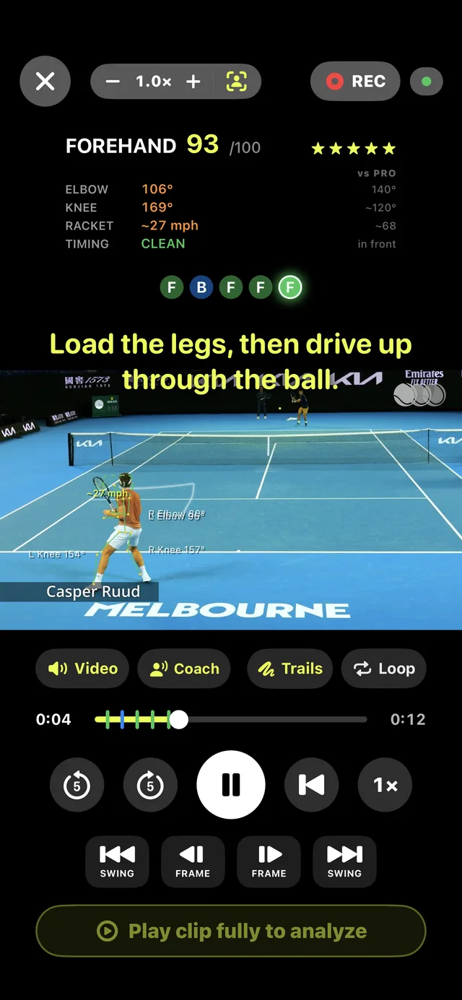
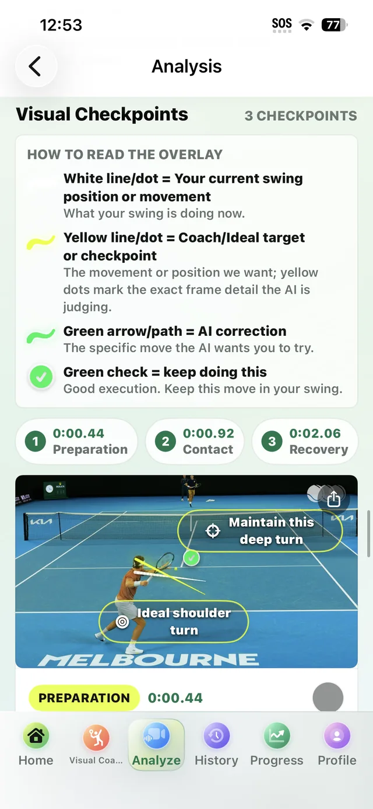
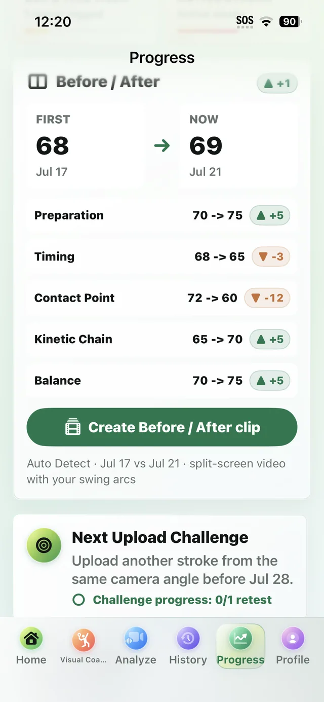

Match tracker or swing coach?
Searching for a SwingVision alternative? Honest answer first: it depends what job you're hiring the app for. Match trackers log what happened. AI Tennis Swing Coach works on how you swing. Here's how to pick the right tool — even if it isn't ours.
Two different jobs.
"What happened in my match?"
Match-tracking apps — SwingVision is the best-known — are built for match day: they log the score, count winners and errors, measure shot speed and placement, call lines, and cut highlight reels. The output is statistics about what happened.
If that's what you want, a match tracker is the right tool — and we'll say so plainly: AI Tennis Swing Coach does not do match scoring, line calls, or highlight reels.
"Why does my forehand break down?"
AI Tennis Swing Coach is built for practice day: it tracks your body and racket frame by frame, scores every swing 0–100 against pro benchmarks, tells you what to fix and when in the swing it goes wrong, and gives you drills — then proves your progress with before/after comparisons.
The output is coaching that changes your swing, not statistics about it.
What the swing coach actually does.
- Visual Coach — free and unlimited: a live AI skeleton tracks you on court with spoken cues and a 0–100 score for every swing, fully on-device; or replay any video frame by frame with fault cues at the exact moment they happen.
- Deep AI analysis: a full coaching report from one clip — swing phases scored, visual checkpoints drawn on your actual frames, an NTRP-style level estimate, and one practical Fix of the Day. Starts with 3 free AI credits.
- Proof you're improving: score trends, personal bests, and split-screen before/after clips per mechanic.
- Shareable results: every analysis exports as a coach-grade PDF report — see a real sample.



Side by side.
| What you want to do | Match trackers (e.g. SwingVision) | AI Tennis Swing Coach |
|---|---|---|
| Keep score & match statistics automatically | Yes — core feature | No |
| Line calls & challenges | Yes | No |
| Highlight reels from matches | Yes | No |
| Frame-by-frame technique analysis with corrections | Not the focus | Yes — core feature |
| 0–100 swing scores vs. pro benchmarks, live on court | No | Yes — free |
| Spoken coaching cues while you play | No | Yes — free |
| Deep coaching report: phases, checkpoints, drills, level estimate | No | Yes |
| Coach-grade PDF report to share | No | Yes |
| Technique before/after progress proof | Not the focus | Yes |
| Works without an account | Varies | Yes — Visual Coach needs no sign-in |
Using both is completely reasonable: a match tracker on match day to log results, AI Tennis Swing Coach on practice days to change what those results come from. They're teammates, not rivals.
Fair questions.
So is AI Tennis Swing Coach a SwingVision alternative or not?
If you use SwingVision for match stats — no, keep a match tracker. If what you actually wanted all along was to get better — technique analysis, coaching cues, drills, progress proof — then yes, that's exactly the job we do.
Where can I see them side by side somewhere neutral?
AlternativeTo keeps a list of sport video analysers for iPhone, and both apps are on it. Worth a look if you would rather not take our word for any of this.
What does it cost?
The entire Visual Coach (live + replay) is free and unlimited, no account needed. Deep AI analysis includes 3 free credits; Pro adds 100 credits monthly plus longer clips.
What do I need to start?
An iPhone or iPad and a short video of your swings — or just point the camera at the court and use Live mode. The complete step-by-step guide covers filming, analysis, and exporting reports.
Is the AI feedback a certified rating?
No — scores and the NTRP-style level are app estimates for training, not official ratings, and coaching guidance can be imperfect. For major technique changes, verify with a qualified coach.
Ready to work on your swing?
SwingVision is a trademark of its respective owner. AI Tennis Swing Coach is an independent app by NovaDev Code Studio and is not affiliated with, sponsored by, or endorsed by SwingVision. Feature comparisons reflect each product's publicly stated focus at the time of writing and may change — always check the latest from each developer.